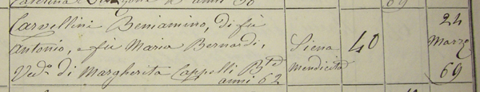

|
- BENIAMINO -
|
|
Morto allo Spedale di Siena il 24 marzo 1869, letto n.40. Vi entrò il 26 febbraio.  Attraverso un altro precedente ricovero allo Spedale e precisamente dal 14 al 18 marzo 1868, siamo venuti
a conoscenza delle difficoltà economiche nelle quali versava. Era infatti domiciliato allo stabilimento di mendicità.
|